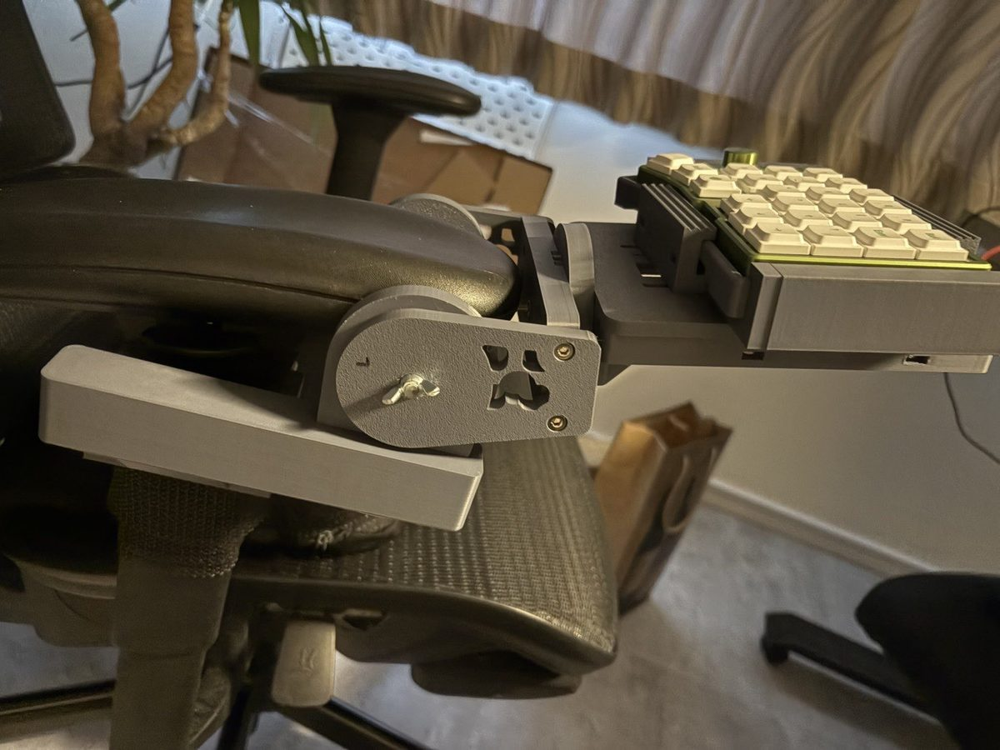
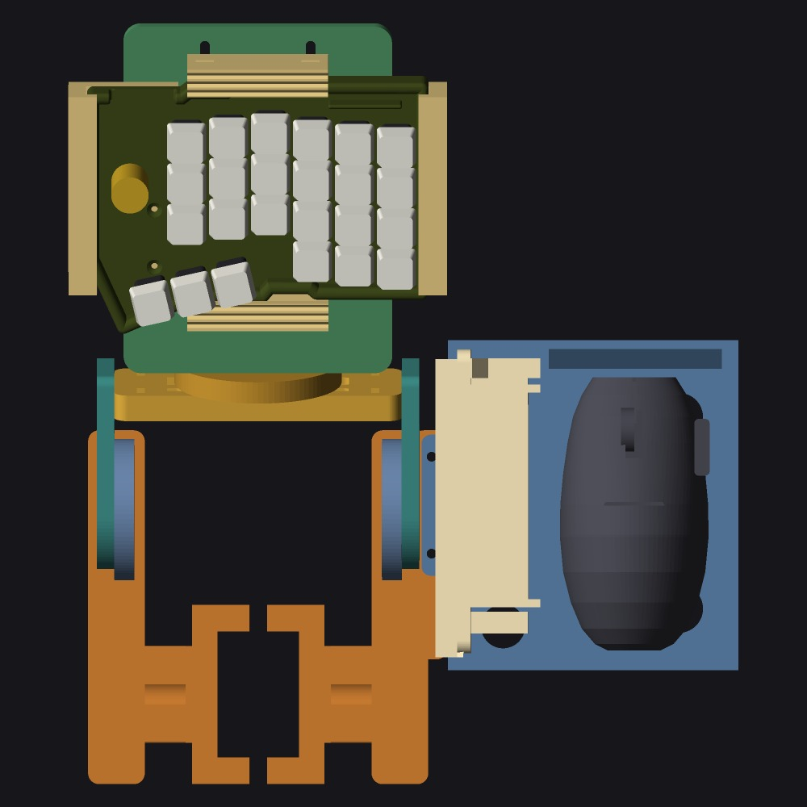
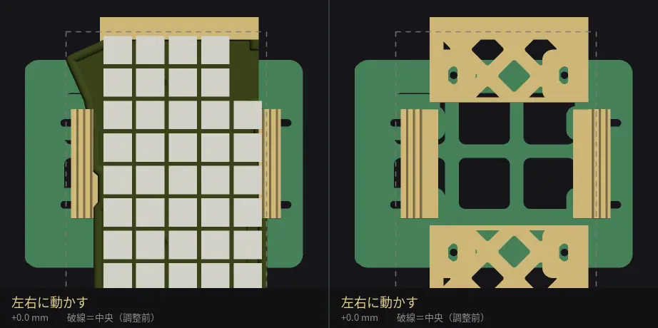
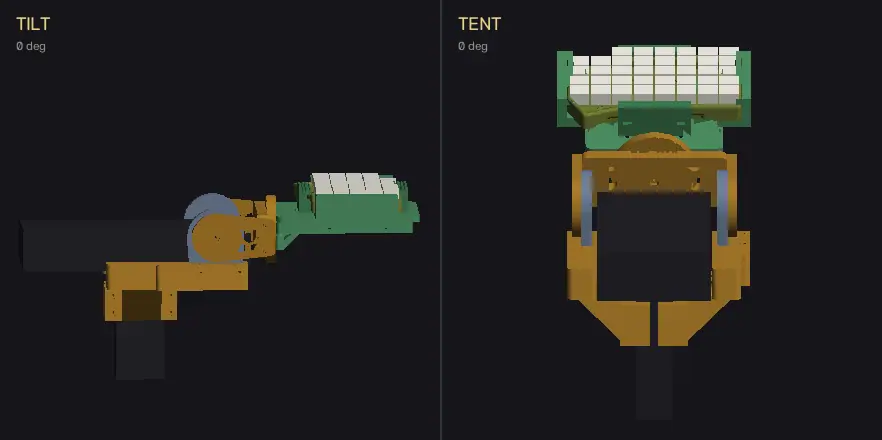
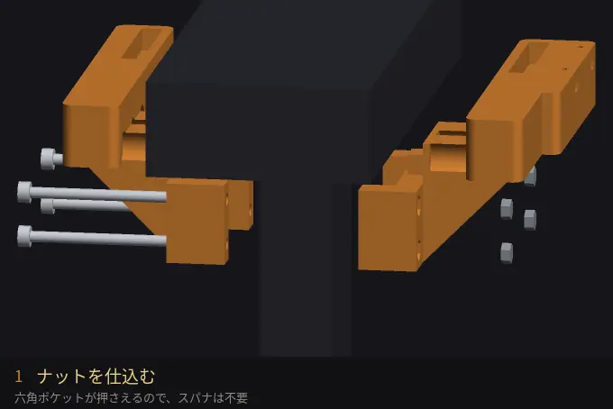
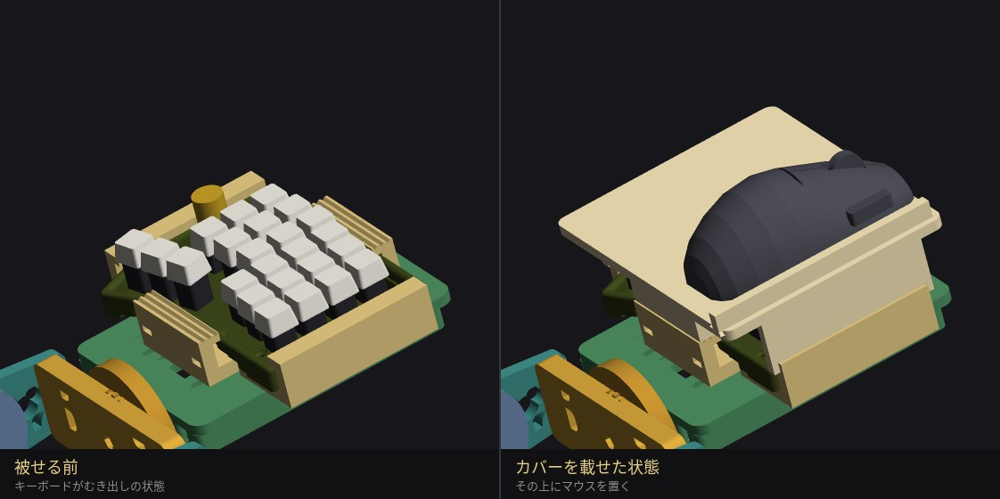
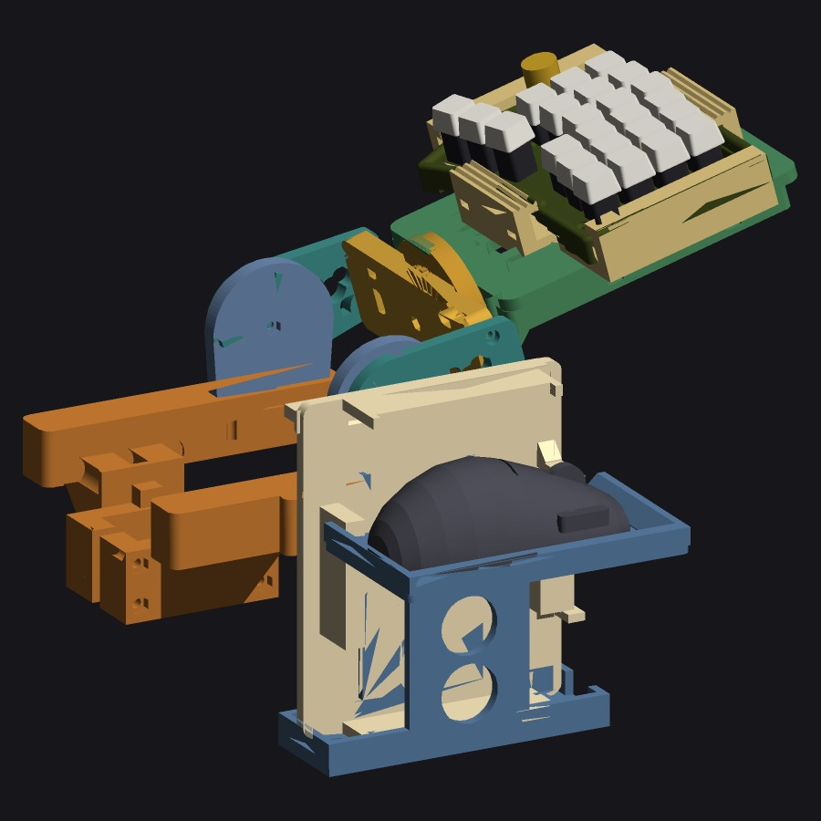

欲しいものが売っていないなら、設計して刷る。
身のまわりの道具を、自分の手でつくっています。
机ではなく、椅子に手を預ける。
分割キーボードを椅子のアームレストに固定するドックです。 手の位置が椅子と一緒に動くので、深く座っても浅く座っても、 リクライニングを倒しても、キーボードとの距離が変わりません。 肩と手首を、机の高さから解放するための道具です。


分割キーボードの専用ケースに合わせて、レールとラッチを作っています。 汎用ホルダーのように挟み込むのではなく、そのケースのための受けです。 レールの爪がケースの縁に掛かり、前後をラッチで押さえます。
固定はM4ネジ8本。取り付け穴はすべて長穴です。 レールとラッチをそろえて動かせば、キーボードの位置ごと 左右に±3mm、前後に±10mm ずらせます。 実際にケースを載せた状態で位置を出してから本締めするので、 手の長さや座り方に合わせてミリ単位で追い込めます。 左右のガタは片側0.5mm程度に収まります。

チルトは15度刻みの歯で位置が決まるので、締め直しても同じ角度に戻ります。 テント角は別の軸なので、前後の傾きを決めてから、 手首のひねりだけを追い込めます。

アームレストの支柱を、左右のクランプで挟むだけです。 やることは4手順。ナットを落とし込み、支柱に沿わせ、 M5×70を4本通して、締める。 ナットは六角のポケットに収まるので空回りしません。 スパナで押さえる必要がなく、片手で締められます。
外せば椅子は元のまま。傷も穴も残らないので、 売却や返却の予定がある椅子でも使えます。

マウスを使うときだけ、キーボードの上に板を被せます。 デッキごと傾くので、マウス面の傾きはそのときのチルト・テント角と同じ。 外側には高さ10mmのフチが立つので、傾けても滑り落ちません。天板は168×138mmです。

右のクランプには、カバー置き場とマウス棚が最初から付いています。 キーボードを使うときは、カバーを外して隣に立てかけるだけ。 マウスは棚に載せたままです。
外したカバーを床や机に置きに行く必要がありません。 棚の内寸は74×128mm。ロジクール G703（124×68×43mm）の実寸で確認しています。

作品は随時追加していきます。
既製品では少しだけ足りない、というものを自分でつくっています。 頭の中にあるかたちが、そのまま手に取れるものになる。 この楽しさが最高です。
設計はコードで書いています。寸法をひとつのファイルにまとめておいて、 数字を変えると全パーツが作り直される仕組みです。 印刷する前に、ネジが実際に入るか、可動部がぶつからないか、 造形サイズに収まるかを機械的に検査してから刷ります。 「刷ってから合わない」を減らすためです。
ご覧いただきありがとうございました。